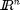

<!DOCTYPE html
  PUBLIC "-//W3C//DTD HTML 4.01 Transitional//EN">
<html><head>
      <meta http-equiv="Content-Type" content="text/html; charset=utf-8">
   <!--
This HTML was auto-generated from MATLAB code.
To make changes, update the MATLAB code and republish this document.
      --><title>Vertex enumeration of a random point set in 3-dimensions</title><meta name="generator" content="MATLAB 8.0"><link rel="schema.DC" href="http://purl.org/dc/elements/1.1/"><meta name="DC.date" content="2014-11-27"><meta name="DC.source" content="Vertex_enumeration_3D.m"><style type="text/css">
html,body,div,span,applet,object,iframe,h1,h2,h3,h4,h5,h6,p,blockquote,pre,a,abbr,acronym,address,big,cite,code,del,dfn,em,font,img,ins,kbd,q,s,samp,small,strike,strong,sub,sup,tt,var,b,u,i,center,dl,dt,dd,ol,ul,li,fieldset,form,label,legend,table,caption,tbody,tfoot,thead,tr,th,td{margin:0;padding:0;border:0;outline:0;font-size:100%;vertical-align:baseline;background:transparent}body{line-height:1}ol,ul{list-style:none}blockquote,q{quotes:none}blockquote:before,blockquote:after,q:before,q:after{content:'';content:none}:focus{outine:0}ins{text-decoration:none}del{text-decoration:line-through}table{border-collapse:collapse;border-spacing:0}

html { min-height:100%; margin-bottom:1px; }
html body { height:100%; margin:0px; font-family:Arial, Helvetica, sans-serif; font-size:10px; color:#000; line-height:140%; background:#fff none; overflow-y:scroll; }
html body td { vertical-align:top; text-align:left; }

h1 { padding:0px; margin:0px 0px 25px; font-family:Arial, Helvetica, sans-serif; font-size:1.5em; color:#d55000; line-height:100%; font-weight:normal; }
h2 { padding:0px; margin:0px 0px 8px; font-family:Arial, Helvetica, sans-serif; font-size:1.2em; color:#000; font-weight:bold; line-height:140%; border-bottom:1px solid #d6d4d4; display:block; }
h3 { padding:0px; margin:0px 0px 5px; font-family:Arial, Helvetica, sans-serif; font-size:1.1em; color:#000; font-weight:bold; line-height:140%; }

a { color:#005fce; text-decoration:none; }
a:hover { color:#005fce; text-decoration:underline; }
a:visited { color:#004aa0; text-decoration:none; }

p { padding:0px; margin:0px 0px 20px; }
img { padding:0px; margin:0px 0px 20px; border:none; }
p img, pre img, tt img, li img { margin-bottom:0px; } 

ul { padding:0px; margin:0px 0px 20px 23px; list-style:square; }
ul li { padding:0px; margin:0px 0px 7px 0px; }
ul li ul { padding:5px 0px 0px; margin:0px 0px 7px 23px; }
ul li ol li { list-style:decimal; }
ol { padding:0px; margin:0px 0px 20px 0px; list-style:decimal; }
ol li { padding:0px; margin:0px 0px 7px 23px; list-style-type:decimal; }
ol li ol { padding:5px 0px 0px; margin:0px 0px 7px 0px; }
ol li ol li { list-style-type:lower-alpha; }
ol li ul { padding-top:7px; }
ol li ul li { list-style:square; }

.content { font-size:1.2em; line-height:140%; padding: 20px; }

pre, tt, code { font-size:12px; }
pre { margin:0px 0px 20px; }
pre.error { color:red; }
pre.codeinput { padding:10px; border:1px solid #d3d3d3; background:#f7f7f7; }
pre.codeoutput { padding:10px 11px; margin:0px 0px 20px; color:#4c4c4c; }

@media print { pre.codeinput, pre.codeoutput { word-wrap:break-word; width:100%; } }

span.keyword { color:#0000FF }
span.comment { color:#228B22 }
span.string { color:#A020F0 }
span.untermstring { color:#B20000 }
span.syscmd { color:#B28C00 }

.footer { width:auto; padding:10px 0px; margin:25px 0px 0px; border-top:1px dotted #878787; font-size:0.8em; line-height:140%; font-style:italic; color:#878787; text-align:left; float:none; }
.footer p { margin:0px; }
.footer a { color:#878787; }
.footer a:hover { color:#878787; text-decoration:underline; }
.footer a:visited { color:#878787; }

table th { padding:7px 5px; text-align:left; vertical-align:middle; border: 1px solid #d6d4d4; font-weight:bold; }
table td { padding:7px 5px; text-align:left; vertical-align:top; border:1px solid #d6d4d4; }


  </style></head><body><div class="content"><h1>Vertex enumeration of a random point set in 3-dimensions</h1><!--introduction--><!--/introduction--><h2>Contents</h2><div><ul><li><a href="#1">Introduction</a></li><li><a href="#2">Initial data</a></li><li><a href="#5">Processing</a></li><li><a href="#8">Verification</a></li><li><a href="#10">Contact author</a></li></ul></div><h2>Introduction<a name="1"></a></h2><p>A convex polytope P can be specified in two ways:</p><div><ul><li>as the convex hull of the vertex set V of P, or</li><li>as the intersection of the set H of its facetinducing halfspaces</li></ul></div><p>The vertex enumeration problem is to compute V from H. The facet enumeration problem it to compute H from V. These two problems are essentially equivalent under point-hyperplane duality and they are among the central computational problems in the theory of polytopes. The convex hull algorithm of this package is essentially a <i>facet enumeration algorithm</i> , which means that it gives the faces (facetinducing halfspaces, H) that constitute the convex hull of a given set of vertices (V). However, the reverse (i.e. vertex enumeration) is also possible using this algorithm, by making use of the point/hyperplane duality. The set of all points in   whose coordinates satisfy a linear equation</p><p></p><p>is called a hyperplane. Substituting homogeneous coordinates   and multiplying out, we get a homogeneous linear equation that represents a hyperplane in :</p><p></p><p>Notice the symmetry of the last equation between the hyperplane coefficients () and the point coefficients (). For fixed  and variable , this equation can also be viewed as the equation characterizing the hyperplanes  passing through a given point . In fact, the hyperplane coefficients  are also only defined up to an overall scale factor, so the space of all hyperplanes can be considered to be another projective space called the dual of the original space . By the symmetry of the last equation, the dual of the dual is the original space. An extremely important duality principle follows from this symmetry:</p><p><b>Duality Principle</b> : For any projective result established using points and hyperplanes, a symmetrical result holds in which the roles of hyperplanes and points are interchanged: points become planes, the points in a plane become the planes through a point, etc.</p><p>In this example the vertex enumeration problem is solved, i.e. the polytope defined by the system of inequalities A*x &lt;= b is converted into a list of vertices V.</p><h2>Initial data<a name="2"></a></h2><p>Set the random number generator.</p><pre class="codeinput">rng(1);
</pre><p>Set the dimension of the problem.</p><pre class="codeinput">d=3;
</pre><p>Set the system of inequalities A*x + b &lt;= 0 to be converted into vertices.</p><pre class="codeinput">A=rand(100,d)*2-1;
n=sqrt(sum(A.^2,2));
A=A./repmat(n,[1 size(A,2)]);
b=-ones(100,1);
</pre><h2>Processing<a name="5"></a></h2><p>Convert the planes to equivalent points by applying the duality principle.</p><pre class="codeinput">points=-A./repmat(b,1,size(A,2));
</pre><p>Find the coefficients of the planes of the facets of the convex hull of the set of equivalent points.</p><pre class="codeinput">[~,cf,df]=convhull_nd(points);
</pre><p>Convert the planes of the convex hull into equivalent points by applying the duality principle.</p><pre class="codeinput">points2=-cf./repmat(df,1,size(cf,2));
</pre><h2>Verification<a name="8"></a></h2><p>Check if the relation A*x + b &lt;= 0 applies for all the vertices found.</p><pre class="codeinput"><span class="keyword">if</span> any(A*points2'+b(:,ones(1,size(points2,1)))&gt;0)
    error(<span class="string">'At least one vertex is not on the convex hull.'</span>)
<span class="keyword">end</span>
</pre><p>Each vertex found should satisfy three plane equations (since each vertex is the intersection of three planes).</p><pre class="codeinput"><span class="keyword">if</span> any(sum(A*points2'+b(:,ones(1,size(points2,1)))&gt;-100*eps)&gt;d)
    warning(<span class="string">'The convex hull is degenerate.'</span>)
<span class="keyword">elseif</span> any(sum(A*points2'+b(:,ones(1,size(points2,1)))&gt;-100*eps)&lt;d)
    error(<span class="string">'At least one vertex does not belong to the convex hull.'</span>);
<span class="keyword">end</span>
</pre><h2>Contact author<a name="10"></a></h2><pre>(c) 2014 by George Papazafeiropoulos
First Lieutenant, Infrastructure Engineer, Hellenic Air Force
Civil Engineer, M.Sc., Ph.D. candidate, NTUA</pre><p>Email: <a href="mailto:gpapazafeiropoulos@yahoo.gr">gpapazafeiropoulos@yahoo.gr</a></p><p>Website: <a href="http://users.ntua.gr/gpapazaf/">http://users.ntua.gr/gpapazaf/</a></p><p class="footer"><br><a href="http://www.mathworks.com/products/matlab/">Published with MATLAB&reg; R2012b</a><br></p></div><!--
##### SOURCE BEGIN #####
%% Vertex enumeration of a random point set in 3-dimensions

%% Introduction
% A convex polytope P can be specified in two ways:
%
% * as the convex hull of the vertex set V of P, or
% * as the intersection of the set H of its facetinducing halfspaces
%
% The vertex enumeration problem is to compute V from H. The facet
% enumeration problem it to compute H from V. These two problems are
% essentially equivalent under point-hyperplane duality and they are among
% the central computational problems in the theory of polytopes.
% The convex hull algorithm of this package is essentially a _facet
% enumeration algorithm_ , which means that it gives the faces
% (facetinducing halfspaces, H) that constitute the convex hull of a given
% set of vertices (V). However, the reverse (i.e. vertex enumeration) is
% also possible using this algorithm, by making use of the point/hyperplane
% duality. 
% The set of all points in  $I\!\!R^{n}$ whose coordinates satisfy a linear
% equation
%
% $$a_{1}X_{1} + \ldots + a_{n} X_{n} + a_{n + 1} = 0
% \qquad \vec{X}\in I\!\!R^n $$
%
% is called a hyperplane. Substituting homogeneous coordinates  $$X_i =
% x_i/x_{n + 1}$ and multiplying out, we get a homogeneous linear equation
% that represents a hyperplane in $${I\!\!P}^{n}$:
%
% $$ (a_1,\ldots,a_{n+1})\cdot(x_1,\ldots,x_{n+1}) = \sum_{i = 1}^{n + 1}
% a_{i} x_{i} = 0 \qquad\vec{x}\in I\!\!P^{n} $$
%
% Notice the symmetry of the last equation between the hyperplane
% coefficients ($a_1, ..., a_{n + 1}$) and the point coefficients ($x_1,
% ..., x_{n + 1}$). For fixed $\vec{x}$ and variable $\vec{a}$, this
% equation can also be viewed as the equation characterizing the
% hyperplanes $\vec{a}$ passing through a given point $\vec{x}$. In fact,
% the hyperplane coefficients $\vec{a}$ are also only defined up to an
% overall scale factor, so the space of all hyperplanes can be considered
% to be another projective space called the dual of the original space
% ${I\!\!P}^{n}$. By the symmetry of the last equation, the dual of the
% dual is the original space. An extremely important duality principle
% follows from this symmetry:
%
% *Duality Principle* : For any projective result established using points
% and hyperplanes, a symmetrical result holds in which the roles of
% hyperplanes and points are interchanged: points become planes, the points
% in a plane become the planes through a point, etc.
%
% In this example the vertex enumeration problem is solved, i.e. the
% polytope defined by the system of inequalities A*x <= b is converted into
% a list of vertices V.

%% Initial data
% Set the random number generator.
rng(1);
%% 
% Set the dimension of the problem.
d=3;
%% 
% Set the system of inequalities A*x + b <= 0 to be converted into
% vertices.
A=rand(100,d)*2-1;
n=sqrt(sum(A.^2,2));
A=A./repmat(n,[1 size(A,2)]);
b=-ones(100,1);

%% Processing
% Convert the planes to equivalent points by applying the duality
% principle.
points=-A./repmat(b,1,size(A,2));
%%
% Find the coefficients of the planes of the facets of the convex hull of
% the set of equivalent points.
[~,cf,df]=convhull_nd(points);
%%
% Convert the planes of the convex hull into equivalent points by applying
% the duality principle.
points2=-cf./repmat(df,1,size(cf,2));

%% Verification
% Check if the relation A*x + b <= 0 applies for all the vertices found.
if any(A*points2'+b(:,ones(1,size(points2,1)))>0)
    error('At least one vertex is not on the convex hull.')
end
%%
% Each vertex found should satisfy three plane equations (since each vertex
% is the intersection of three planes).
if any(sum(A*points2'+b(:,ones(1,size(points2,1)))>-100*eps)>d)
    warning('The convex hull is degenerate.')
elseif any(sum(A*points2'+b(:,ones(1,size(points2,1)))>-100*eps)<d)
    error('At least one vertex does not belong to the convex hull.');
end

%% Contact author
%
%  (c) 2014 by George Papazafeiropoulos
%  First Lieutenant, Infrastructure Engineer, Hellenic Air Force
%  Civil Engineer, M.Sc., Ph.D. candidate, NTUA
%
% Email: gpapazafeiropoulos@yahoo.gr
%
% Website: http://users.ntua.gr/gpapazaf/
%


##### SOURCE END #####
--></body></html>